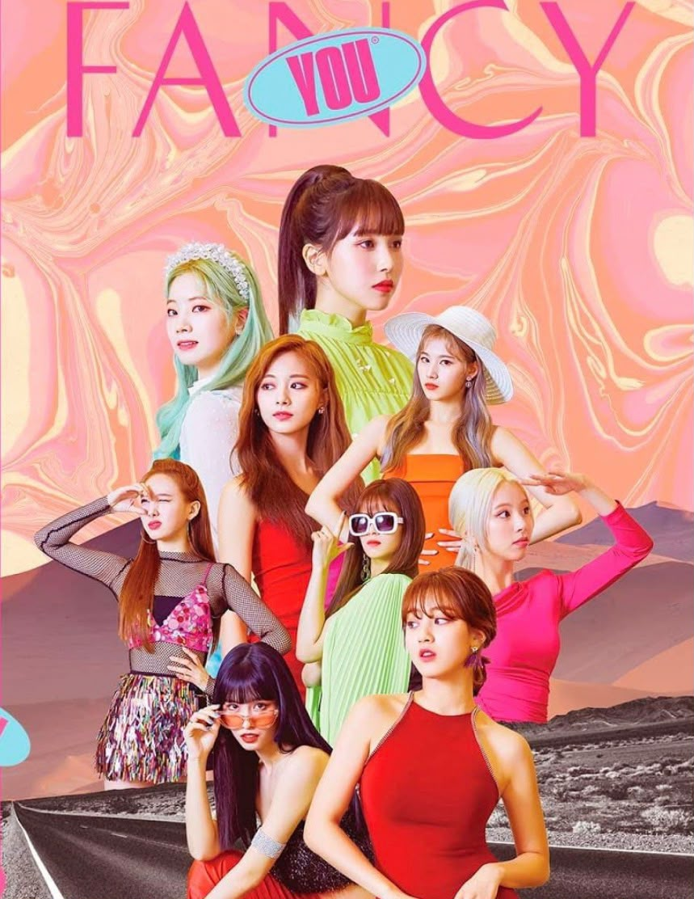

저 태양 빨간빛 네 두 볼 같아
Oh, tell me, I'm the only one, baby
I fancy you, I fancy you, fancy you (TWICE!)
It's dangerous, 따끔해, 넌 장미 같아
괜찮아, 조금도 난 겁나지 않아
더 세게 꼭 잡아, take my hand
좀 위험할 거야, 더 위험할 거야, baby
달콤한 초콜릿 아이스크림처럼 녹아버리는
지금 내 기분 so lovely
깜깜한 우주 속 가장 반짝이는
저 별, 저 별, 그 옆에 큰 네 별
거기 너, I fancy you
아무나 원하지 않아, hey, I love you (love ya!)
그래, 너, I fancy you
꿈처럼 행복해도 돼 'cause I need you (what?)
Fancy you, ooh-ooh-ooh-ooh
누가 먼저 좋아하면 어때?
Fancy you, ooh-ooh-ooh-ooh
지금 너에게로 갈래 (fancy, ooh)
매일매일 난 정말 아무것도 못하네
Oh, my, mayday, 이러다 큰일 낼 것 같은데
Bang-bang, 머리가 홀린 듯 reset이 돼
어쩌면 좋아, 이게 맞는 건지 몰라, SOS
Swim, swim, 너란 바다에 잠수함이 돼
매일이 birthday, 달콤해, 너와 나의 fantasy
Dream, dream, 마치 꿈같아, 볼 꼬집어봐
요즘 나의 상태 메세진, la-la-la, baby
달콤한 초콜릿 아이스크림처럼 녹아버리는
지금 내 기분 so lovely
깜깜한 우주 속 가장 반짝이는
저 별, 저 별, 그 옆에 큰 네 별
거기 너, I fancy you
아무나 원하지 않아, hey, I love you (love ya!)
그래, 너, I fancy you
꿈처럼 행복해도 돼 'cause I need you (what?)
Fancy you, ooh-ooh-ooh-ooh
누가 먼저 좋아하면 어때?
Fancy you, ooh-ooh-ooh-ooh
지금 너에게로 갈래 (fancy, ooh)
연기처럼 훅 사라질까?
늘 가득히 담아, 널 두 눈에 담아
생각만으로 포근해져
몰래 뒤에서 안아 널 놓지 않을래
거기 너, I fancy you (fancy you)
아무나 원하지 않아, hey, I love you (love ya!)
그래, 너, I fancy you
꿈처럼 행복해도 돼 'cause I need you (what?)
Fancy you, ooh-ooh-ooh-ooh
누가 먼저 좋아하면 어때?
Fancy you, ooh-ooh-ooh-ooh
지금 너에게로 갈래 (fancy, ooh)
